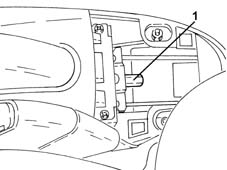

3380A04 handbrake - check travel
- Path
- Procedures > 33 BRAKING SYSTEM > 3380 HANDBRAKE > 3380A handbrake control and linkage > 3380A04 handbrake - check travel
- Kind
- repair procedure (removal / refitting; the operation number is the code)
- Applies to
- all engines; all production periods
- Interactive page
- https://sloeber94.github.io/elrnDB-lYpsln/en/#/2429208
Applies to: all engines; all production periods
.
Position the vehicle on the ramp.
Proceed with removal 7040L22 REAR TRIM on TUNNEL -R.R. .
1. Loosen the adjustment nut for the handbrake cable by at least two or three turns to ensure that the cable is completely loosened.

Applies to: all engines; all production periods
Start engine.
With the engine idling, press the brake pedal forcefully at least 10 or 15 times.
Retighten the handbrake cable adjustment nut to the original marked position.
Make sure that, with the handbrake lever in the rest position, the rear wheels can rotate freely.
Check that the braking action of the handbrake starts before the first notch.
At the end of the adjustment, check that the lever does not travel through more than five notches of the toothed sector.
Switch off the engine.
Proceed with refitting 7040L22 REAR TRIM on TUNNEL -R.R. .
Remove the car from the ramps.
Topics linked from this page (1)
Topics that link to this page (20)
- G01 HANDBRAKE NOT EFFICIENT
- 0010K40 40,000km service coupon, emission control versions
- 0010K80 80,000km service coupon - emission control versions
- 0010M20 120,000km service coupon, emission control versions
- 0010M60 160,000km service coupon - emission control versions
- 1040A10 fuel tank - r + r and decant fuel
- 1040A14 fuel tank - r + r for replacement
- 1040B30 fuel delivery line - r r
- 1040B36 rear fuel delivery line - r r
- 1040B56 fuel return line - r r
- 1080E61 Fuel vapour PIPE from VAPOUR FILTER to INTERMEDIATE COUPLING - R.R.
- 1080E62 pipe from fuel vapour separator to solenoid - r r
- 3320B10 REAR. DRUM BRAKES - R.R.
- 3320B20 Rear brake shoe CYLINDER (one) left or right - Replace.
- 3340B74 RIGID PIPE from connector to rear brakes . (one), left or right - R.R.
- 3380A10 handbrake lever - r+r
- 3380A30 handbrake cable - r+r
- 4420D20 rear suspension axle -replace- includes r+r, check, parts transfer and bleeding
- 4450D14 hub axle pillar of one rear wheel, l/h or r/h - r+r with hub removed - includes bush replacement if necessary
- 4450D15 rear stub axle strut - r r